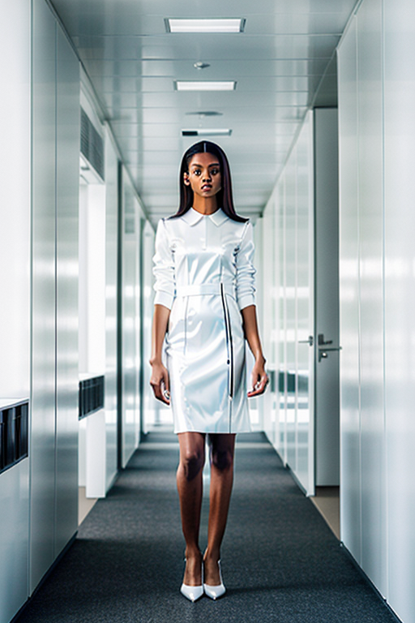
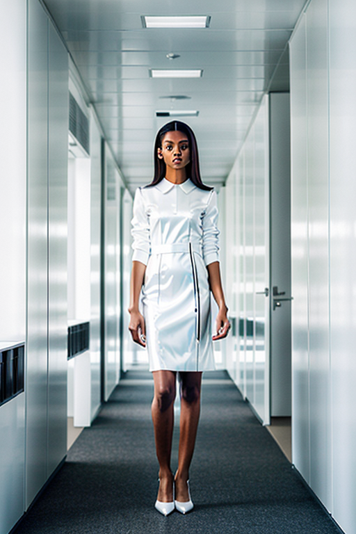

This set explores uniform girl wrinkle free through retro aesthetics and bold tone under window light. Compositions use close-up with bedroom scene, keeping focus clear and tidy. Details like office styling and balanced colors make browsing easy.
Browse uniform images. Page 2 of curated uniform-style portrait collection.


 



This page explores page2 with a practical focus on visual detail and browsing experience. Internal navigation leads to related items with comparable tone or composition. This reduces bounce and supports exploration within the same theme. Internal navigation leads to related items with comparable tone or composition. This reduces bounce and supports exploration within the same theme. Bookmark the page if it’s useful; updates aim to improve clarity, speed, and overall structure over time. Internal navigation leads to related items with comparable tone or composition. This reduces bounce and supports exploration within the same theme. Alt text and headings are optimized to make the content accessible and to provide consistent cues across the site. Subtle differences in wording help avoid duplication across similar pages. For more context, browse related entries linked nearby; each page offers a slightly different angle to limit overlap. Internal navigation leads to related items with comparable tone or composition. This reduces bounce and supports exploration within the same theme. The image aims to deliver a straightforward visual impression while keeping the file lightweight. A brief explanation clarifies the subject and lighting so visitors can quickly decide where to go next.